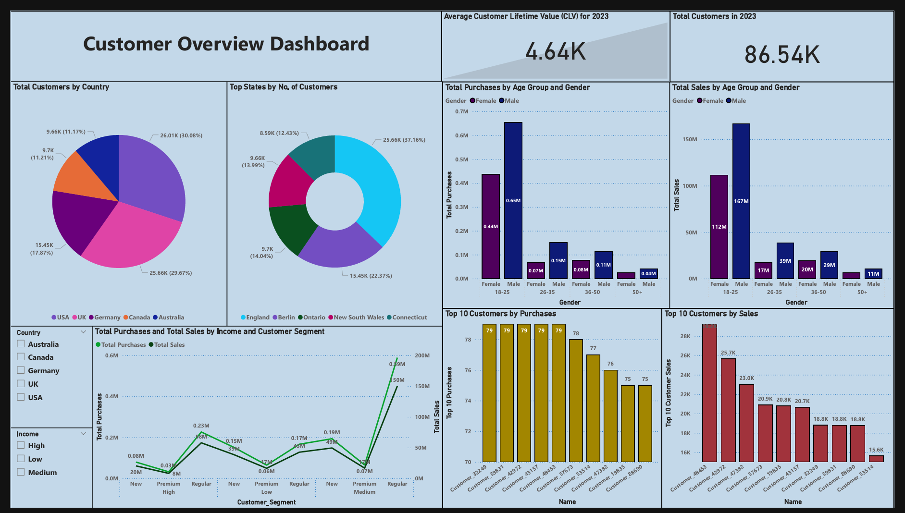
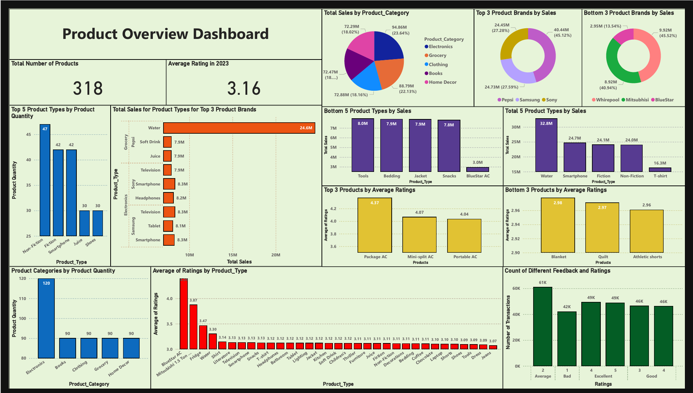
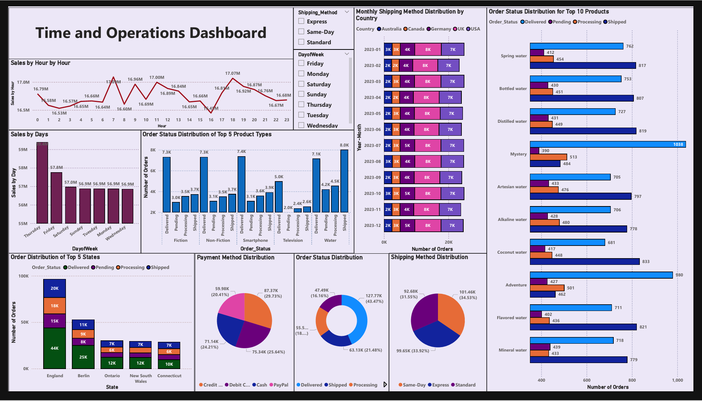

XYZ Retail Company 2023 Business Performance Report: Insights into Sales, Customers, Products, and Operations
This project conducted an in-depth analysis of XYZ Retail Company’s operations for the year 2023, focusing on sales performance, customer behavior, product performance, and operational efficiency. Using Power BI, the project delivered interactive dashboards and actionable insights that highlight the company’s strengths, address inefficiencies, and provide strategic recommendations for improvement. The goal was to optimize operations, enhance customer satisfaction, and drive sustained growth in a competitive retail environment.
The analysis revealed that XYZ Retail Company generated an impressive $402.03M in total revenue, with an average monthly sales figure of $33.47M. Electronics and Grocery emerged as the top-performing product categories, contributing significantly to the overall revenue. However, water products, despite their high order volumes, faced notable fulfillment delays, signaling inefficiencies in the supply chain. The study also highlighted customer behavior trends, identifying Medium Income Regular customers as the most significant contributors to sales, while Premium customers and female demographics showed lower engagement, representing areas for improvement.
Product performance analysis uncovered key insights into high-demand items such as Smartphones and Televisions, which maintained strong fulfillment rates. In contrast, Fiction and Non-Fiction books exhibited significant delays, reflecting inventory management and supplier coordination challenges. Additionally, low-rated products in categories like Clothing and Home Decor indicated quality issues and misaligned customer expectations. The operational analysis of shipping methods demonstrated a balanced distribution among Standard, Express, and Same-Day Shipping. However, adoption of Same-Day Shipping lagged in regions like Australia and Canada, highlighting logistical gaps. Payment method analysis showed a dominance of Credit and Debit Card transactions, while PayPal’s lower adoption rate of 19.6% suggested untapped potential for promoting alternative payment options.
The deliverables included a suite of Power BI dashboards tailored to specific business dimensions. The Sales Trends Dashboard visualized monthly and hourly sales patterns, top-performing categories, and year-over-year growth. The Customer Behavior Dashboard segmented customers by income, demographics, and spending habits, providing insights into retention and engagement trends. The Product Performance Dashboard detailed sales and ratings by category and brand, identifying both opportunities and challenges. Finally, the Operational Efficiency Dashboard evaluated shipping methods, payment preferences, and regional fulfillment performance, highlighting bottlenecks and inefficiencies.
Based on the findings, several recommendations were proposed. To address operational inefficiencies, the business should enhance supply chain processes to reduce delays in water products and books. Expanding logistical infrastructure in regions like Australia and Canada can improve Same-Day Shipping adoption, while targeted promotions can increase PayPal usage. Customer engagement can be boosted by launching personalized campaigns for Premium customers and female demographics and enhancing loyalty programs with exclusive benefits. Improving product quality and alignment in low-rated categories and leveraging the success of high-demand items like Smartphones can further strengthen the company’s position.
This project showcases expertise in data analytics, visualization, and strategic decision-making. It demonstrates the value of data-driven insights in optimizing business operations and achieving long-term growth. For the full analysis, dashboards, and recommendations, visit the GitHub Repository.